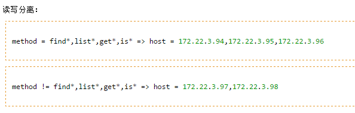
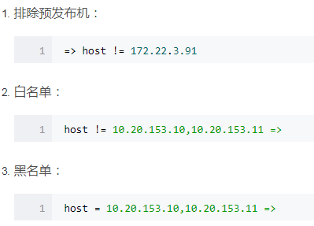
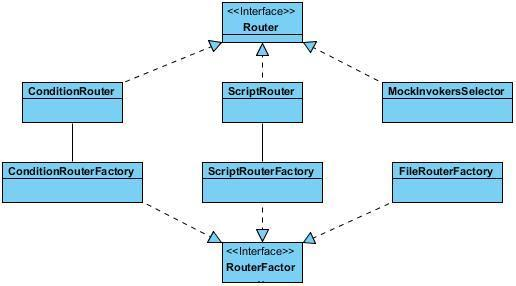
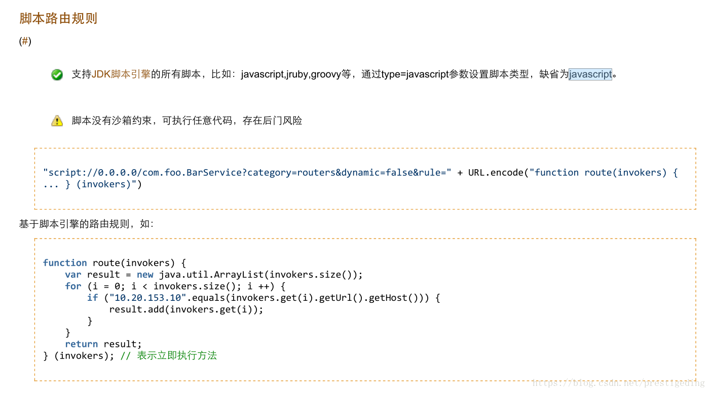

Router负责从多个Invoker中按路由规则选出子集,比如读写分离,应用隔离,白名单等
路由规则确定一个服务调用的目标服务器.它有两种路由规则：条件路由规则和脚本路由规则。同时也支持扩展。


Router相关类图如下：

在AbstractDirectory抽象类的list方法，以及RegistryDirectory类的route方法中将会调用Router类的route方法筛选invoker列表。1
2
3
4
5
6
7
8
9
10
11
12
13
14
15
16
17
18
19
20
21
22
23
24
25
26
27
28
29
30
31
32
33
34
35
36
37
38
39
40
41
42//AbstractDirectory抽象类的list方法
public List<Invoker<T>> list(Invocation invocation) throws RpcException {
if (destroyed) {
throw new RpcException("Directory already destroyed .url: " + getUrl());
}
//根据invocation获取invokers列表(根据方法名查询缓存methodInvokerMap)
List<Invoker<T>> invokers = doList(invocation);
List<Router> localRouters = this.routers;
if (localRouters != null && !localRouters.isEmpty()) {
//遍历路由
for (Router router : localRouters) {
try {
if (router.getUrl() == null || router.getUrl().getParameter(Constants.RUNTIME_KEY, false)) {
//如果url的runtime配置为true,则每次都会进行route
//执行路由，进行过滤
invokers = router.route(invokers, getConsumerUrl(), invocation);
}
} catch (Throwable t) {
logger.error("Failed to execute router: " + getUrl() + ", cause: " + t.getMessage(), t);
}
}
}
return invokers;
}
//RegistryDirectory类的route方法中
private List<Invoker<T>> route(List<Invoker<T>> invokers, String method) {
//创建Invocation对象
Invocation invocation = new RpcInvocation(method, new Class<?>[0], new Object[0]);
//获取路由列表
List<Router> routers = getRouters();
if (routers != null) {
for (Router router : routers) {
if (router.getUrl() != null) {
//执行路由
invokers = router.route(invokers, getConsumerUrl(), invocation);
}
}
}
return invokers;
}
Router接口
1 | public interface Router extends Comparable<Router> { |
ConditionRouter实现类
ConditionRouter：基于条件表达式的路由规则，它的条件规则如下：
- => 之前的为消费者匹配条件，所有参数和消费者的 URL 进行对比，当消费者满足匹配条件时，对该消费者执行后面的过滤规则。
- => 之后为提供者地址列表的过滤条件，所有参数和提供者的 URL 进行对比，消费者最终只拿到过滤后的地址列表。
- 如果匹配条件为空，表示对所有消费方应用，如：=> host != 10.20.153.11
- 如果过滤条件为空，表示禁止访问，如：host = 10.20.153.10 =>
1
2
3
4
5
6
7
8
9
10
11
12
13
14
15
16
17
18
19
20
21
22
23
24
25
26
27
28
29
30
31
32
33
34
35
36
37
38
39
40
41
42
43
44
45
46
47
48
49
50
51
52
53
54
55
56
57
58
59
60
61
62
63
64
65
66
67
68
69
70
71
72
73
74
75
76
77
78
79
80
81
82
83
84
85
86
87
88
89
90
91
92
93
94
95
96
97
98
99
100
101
102
103
104
105
106
107
108
109
110
111
112
113
114
115
116
117
118
119
120
121
122
123
124
125
126
127
128
129
130
131
132
133
134
135
136
137
138
139
140
141
142
143
144
145
146
147
148
149
150
151
152
153
154
155
156
157
158
159
160
161
162
163
164
165
166
167
168
169
170
171
172
173
174
175
176
177
178
179
180
181
182
183
184
185
186
187
188
189
190
191
192
193
194
195
196
197
198
199
200
201
202
203
204
205
206
207
208
209
210
211
212
213
214
215
216
217
218
219
220
221
222
223
224
225
226
227
228
229
230
231
232
233
234
235
236
237
238
239
240
241
242
243
244
245
246
247
248
249
250
251
252
253
254
255
256
257
258
259
260
261
262
263
264
265
266
267
268
269
270
271
272
273
274
275
276
277
278
279
280
281
282
283
284
285
286
287
288
289
290
291
292
293
294
295
296
297
298
299
300
301
302
303
304
305
306
307
308
309
310
311
312
313
314
315
316
317
318
319
320
321
322public class ConditionRouter implements Router, Comparable<Router> {
private static final Logger logger = LoggerFactory.getLogger(ConditionRouter.class);
/**
* 路由正则
*/
private static Pattern ROUTE_PATTERN = Pattern.compile("([&!=,]*)\\s*([^&!=,\\s]+)");
/**
* 路由url
*/
private final URL url;
/**
* 优先级 优先级越大排得越靠前，默认为0
*/
private final int priority;
/**
* 是否强制执行路由
*/
private final boolean force;
/**
* <method,[list*,get*]>
*/
private final Map<String, MatchPair> whenCondition;
/**
* <host,[192.168.99.60]>
*/
private final Map<String, MatchPair> thenCondition;
public ConditionRouter(URL url) {
this.url = url;
//从url中获取priority参数
this.priority = url.getParameter(Constants.PRIORITY_KEY, 0);
//从url中获取force参数
this.force = url.getParameter(Constants.FORCE_KEY, false);
try {
//从url中获取rule参数，并解码
String rule = url.getParameterAndDecoded(Constants.RULE_KEY);
if (rule == null || rule.trim().length() == 0) {
//无效的路由规则
throw new IllegalArgumentException("Illegal route rule!");
}
//从路由规则中移除consumer.和provider.
rule = rule.replace("consumer.", "").replace("provider.", "");
//查看路由规则中是否存在"=>"符号，并获取出现的位置i
int i = rule.indexOf("=>");
//如果路由规则中不存在=>符号，则when为null,否则=>符号的左侧部分为when
String whenRule = i < 0 ? null : rule.substring(0, i).trim();
//如果路由规则中不存在=>符号，则整个路由规则都是then，否则=>符号右侧部分为then
String thenRule = i < 0 ? rule.trim() : rule.substring(i + 2).trim();
//解析规则
Map<String, MatchPair> when = StringUtils.isBlank(whenRule) || "true".equals(whenRule) ? new HashMap<String, MatchPair>() : parseRule(whenRule);
Map<String, MatchPair> then = StringUtils.isBlank(thenRule) || "false".equals(thenRule) ? null : parseRule(thenRule);
// NOTE: It should be determined on the business level whether the `When condition` can be empty or not.
//提示：应该在业务层面搞定`When condition` 是否可以为empty 或者not empty
this.whenCondition = when;
this.thenCondition = then;
} catch (ParseException e) {
throw new IllegalStateException(e.getMessage(), e);
}
}
/**
* 解析规则
* @param rule
* @return
* @throws ParseException
*/
private static Map<String, MatchPair> parseRule(String rule) throws ParseException {
Map<String, MatchPair> condition = new HashMap<String, MatchPair>();
if (StringUtils.isBlank(rule)) {
//路由规则为空，则直接返回
return condition;
}
//kv对，存储匹配和不匹配的条件
MatchPair pair = null;
// 多个值
Set<String> values = null;
//使用正则进行匹配 method = find*,list*,get*,is*
final Matcher matcher = ROUTE_PATTERN.matcher(rule);
//尝试逐一匹配
while (matcher.find()) {
String separator = matcher.group(1);
String content = matcher.group(2);
//条件表达式的开始部分
if (separator == null || separator.length() == 0) {
pair = new MatchPair();
condition.put(content, pair);
}
//条件表达式的KV部分
else if ("&".equals(separator)) {
if (condition.get(content) == null) {
pair = new MatchPair();
condition.put(content, pair);
} else {
pair = condition.get(content);
}
}
//KV部分的值
else if ("=".equals(separator)) {
if (pair == null) {
throw new ParseException("Illegal route rule \""
+ rule + "\", The error char '" + separator
+ "' at index " + matcher.start() + " before \""
+ content + "\".", matcher.start());
}
values = pair.matches;
values.add(content);
}
else if ("!=".equals(separator)) {
if (pair == null) {
throw new ParseException("Illegal route rule \""
+ rule + "\", The error char '" + separator
+ "' at index " + matcher.start() + " before \""
+ content + "\".", matcher.start());
}
values = pair.mismatches;
values.add(content);
}
// kv的value部分，其中value有多个值，使用逗号分隔
else if (",".equals(separator)) { // Should be seperateed by ','
if (values == null || values.isEmpty()) {
throw new ParseException("Illegal route rule \""
+ rule + "\", The error char '" + separator
+ "' at index " + matcher.start() + " before \""
+ content + "\".", matcher.start());
}
values.add(content);
} else {
throw new ParseException("Illegal route rule \"" + rule
+ "\", The error char '" + separator + "' at index "
+ matcher.start() + " before \"" + content + "\".", matcher.start());
}
}
return condition;
}
public <T> List<Invoker<T>> route(List<Invoker<T>> invokers, URL url, Invocation invocation)
throws RpcException {
if (invokers == null || invokers.isEmpty()) {
return invokers;
}
try {
if (!matchWhen(url, invocation)) {
//不匹配when规则，直接返回
return invokers;
}
List<Invoker<T>> result = new ArrayList<Invoker<T>>();
if (thenCondition == null) {
//当前消费者在服务黑名单里
logger.warn("The current consumer in the service blacklist. consumer: " + NetUtils.getLocalHost() + ", service: " + url.getServiceKey());
return result;
}
for (Invoker<T> invoker : invokers) {
if (matchThen(invoker.getUrl(), url)) {
//成功匹配then规则，添加到结果集
result.add(invoker);
}
}
if (!result.isEmpty()) {
return result;
} else if (force) {
//强制执行
logger.warn("The route result is empty and force execute. consumer: " + NetUtils.getLocalHost() + ", service: " + url.getServiceKey() + ", router: " + url.getParameterAndDecoded(Constants.RULE_KEY));
return result;
}
} catch (Throwable t) {
logger.error("Failed to execute condition router rule: " + getUrl() + ", invokers: " + invokers + ", cause: " + t.getMessage(), t);
}
//没有一个符合规则的Provider,则直接返回。5
return invokers;
}
public URL getUrl() {
return url;
}
//是否匹配when规则
boolean matchWhen(URL url, Invocation invocation) {
return whenCondition == null || whenCondition.isEmpty() || matchCondition(whenCondition, url, null, invocation);
}
//url参数为invoker的url属性
private boolean matchThen(URL url, URL param) {
//then规则不为空，且匹配then规则，则返回true
return !(thenCondition == null || thenCondition.isEmpty()) && matchCondition(thenCondition, url, param, null);
}
/**
* 匹配条件
* @param condition
* @param url
* @param param
* @param invocation
* @return
*/
private boolean matchCondition(Map<String, MatchPair> condition, URL url, URL param, Invocation invocation) {
//获取url参数，即消费者的parameters的Map集合
Map<String, String> sample = url.toMap();
boolean result = false;
for (Map.Entry<String, MatchPair> matchPair : condition.entrySet()) {
//例如：method，或者url中的某个参数
String key = matchPair.getKey();
String sampleValue;
if (invocation != null && (Constants.METHOD_KEY.equals(key) || Constants.METHODS_KEY.equals(key))) {
//key=method，则从invocation中获取真实方法名
sampleValue = invocation.getMethodName();
} else {
//从url参数中获取key对应的值
sampleValue = sample.get(key);
if (sampleValue == null) {
//添加前缀default.进行获取
sampleValue = sample.get(Constants.DEFAULT_KEY_PREFIX + key);
}
}
if (sampleValue != null) {
//调用MatchPair的isMatch方法进行匹配
if (!matchPair.getValue().isMatch(sampleValue, param)) {
return false;
} else {
result = true;
}
} else {
if (!matchPair.getValue().matches.isEmpty()) {
return false;
} else {
result = true;
}
}
}
return result;
}
/**
* 内部类
*/
private static final class MatchPair {
final Set<String> matches = new HashSet<String>();
final Set<String> mismatches = new HashSet<String>();
//value为调用的方法名，或者为url自定义参数的值
//param参数为route方法的url参数，即ref url
private boolean isMatch(String value, URL param) {
if (!matches.isEmpty() && mismatches.isEmpty()) {
//存在=，不存在!=
for (String match : matches) {
//进行匹配
if (UrlUtils.isMatchGlobPattern(match, value, param)) {
return true;
}
}
return false;
}
if (!mismatches.isEmpty() && matches.isEmpty()) {
//存在!=,不存在=
for (String mismatch : mismatches) {
if (UrlUtils.isMatchGlobPattern(mismatch, value, param)) {
return false;
}
}
return true;
}
if (!matches.isEmpty() && !mismatches.isEmpty()) {
//存在=，也存在!=,优先使用!=
for (String mismatch : mismatches) {
if (UrlUtils.isMatchGlobPattern(mismatch, value, param)) {
return false;
}
}
for (String match : matches) {
if (UrlUtils.isMatchGlobPattern(match, value, param)) {
return true;
}
}
return false;
}
return false;
}
}
}
//param参数为route方法的url参数
public static boolean isMatchGlobPattern(String pattern, String value, URL param) {
if (param != null && pattern.startsWith("$")) {
pattern = param.getRawParameter(pattern.substring(1));
}
return isMatchGlobPattern(pattern, value);
}
public static boolean isMatchGlobPattern(String pattern, String value) {
if ("*".equals(pattern)) {
return true;
}
if ((pattern == null || pattern.length() == 0) && (value == null || value.length() == 0)) {
return true;
}
if ((pattern == null || pattern.length() == 0) || (value == null || value.length() == 0)) {
return false;
}
//获取*号最后出现的位置
int i = pattern.lastIndexOf('*');
// 没有 "*"
if (i == -1) {
return value.equals(pattern);
}
// "*" 为最后
else if (i == pattern.length() - 1) {
return value.startsWith(pattern.substring(0, i));
}
// "*" 在开始处
else if (i == 0) {
return value.endsWith(pattern.substring(i + 1));
}
// "*" 在中间
else {
String prefix = pattern.substring(0, i);
String suffix = pattern.substring(i + 1);
return value.startsWith(prefix) && value.endsWith(suffix);
}
}
调试parseRule方法
我们使用一个例子来debug下parseRule方法1
2
3
4
5
6
7
8
9
10
11
12
13
14
15
16
17
18
19
20
21
22
23
24
25
26public static void main(String[] args) throws ParseException {
//我们定义一个规则：method = find*,list*,get*,is* => host = 192.168.99.60,192.168.99.61
String rule = "method = find*,list*,get*,is* => host = 192.168.99.60,192.168.99.61";
rule = rule.replace("consumer.", "").replace("provider.", "");
//查看路由规则中是否存在"=>"符号，并获取出现的位置i
int i = rule.indexOf("=>");
String whenRule = i < 0 ? null : rule.substring(0, i).trim();
//如果路由规则中不存在=>符号，则整个路由规则都是then，否则=>符号右侧部分为then
String thenRule = i < 0 ? rule.trim() : rule.substring(i + 2).trim();
//解析规则
Map<String, MatchPair> when = StringUtils.isBlank(whenRule) || "true".equals(whenRule) ? new HashMap<String, MatchPair>() : parseRule(whenRule);
Map<String, MatchPair> then = StringUtils.isBlank(thenRule) || "false".equals(thenRule) ? null : parseRule(thenRule);
}
//parseRule方法部分源码
Map<String, MatchPair> condition = new HashMap<String, MatchPair>();
final Matcher matcher = ROUTE_PATTERN.matcher(rule);
//尝试逐一匹配
while (matcher.find()) {
String separator = matcher.group(1);
String content = matcher.group(2);
}
当解析when规则的时候，在while循环中将会依次解析出如下值(第二个分割线以下的内容是解析then时的结果)：1
2
3
4
5
6
7
8
9
10
11separator content
------------------------------------
"" method(第一次遍历)
= find*
, list*
, get*
, is*
------------------------------------
"" host
= 192.168.99.60
, 192.168.99.61
其中第一次遍历时，separator为空，content为method，此时将会新建一个MatchPair对象，然后放入到condition哈希中，后面的遍历将会按照separator值的不同进入到不同的分支，然后把content值加入到MatchPair对象的matches集合中(separator为=号则放入matches集合,为!=则放入mismatches集合中)。1
2
3
4if (separator == null || separator.length() == 0) {
pair = new MatchPair();
condition.put(content, pair);
}
解析then规则的过程类似，这里就不介绍了。
ScriptRouter实现类
1
2
3
4
5
6
7
8
9
10
11
12
13
14
15
16
17
18
19
20
21
22
23
24
25
26
27
28
29
30
31
32
33
34
35
36
37
38
39
40
41
42
43
44
45
46
47
48
49
50
51
52
53
54
55
56
57
58
59
60
61
62
63
64
65
66
67
68
69
70
71
72
73
74
75
76
77
78
79
80
81
82
83
84
85
86
87
88
89
90
91
92
93
94
95public class ScriptRouter implements Router {
/**
* <脚本类型，脚本引擎>
*/
private static final Map<String, ScriptEngine> engines = new ConcurrentHashMap<String, ScriptEngine>();
/**
* 当前使用的脚本引擎
*/
private final ScriptEngine engine;
/**
* 优先级
*/
private final int priority;
/**
* 路由规则
*/
private final String rule;
/**
* 路由url
*/
private final URL url;
public ScriptRouter(URL url) {
this.url = url;
//获取url的type参数，标识脚本类型，如：js、groovy
String type = url.getParameter(Constants.TYPE_KEY);
//获取url的priority参数，标识优先级
this.priority = url.getParameter(Constants.PRIORITY_KEY, 0);
//获取url的rule参数，标识脚本规则
String rule = url.getParameterAndDecoded(Constants.RULE_KEY);
if (type == null || type.length() == 0) {
//默认脚本类型，javascript
type = Constants.DEFAULT_SCRIPT_TYPE_KEY;
}
if (rule == null || rule.length() == 0) {
//路由规则不可以为空
throw new IllegalStateException(new IllegalStateException("route rule can not be empty. rule:" + rule));
}
//根据脚本类型,从缓存中获取脚本引擎
ScriptEngine engine = engines.get(type);
if (engine == null) {
//根据脚本类型type创建一个脚本引擎
engine = new ScriptEngineManager().getEngineByName(type);
if (engine == null) {
throw new IllegalStateException(new IllegalStateException("Unsupported route rule type: " + type + ", rule: " + rule));
}
//放入缓存
engines.put(type, engine);
}
this.engine = engine;
this.rule = rule;
}
public URL getUrl() {
return url;
}
("unchecked")
public <T> List<Invoker<T>> route(List<Invoker<T>> invokers, URL url, Invocation invocation) throws RpcException {
try {
List<Invoker<T>> invokersCopy = new ArrayList<Invoker<T>>(invokers);
Compilable compilable = (Compilable) engine;
//将参数传递到脚本引擎
Bindings bindings = engine.createBindings();
bindings.put("invokers", invokersCopy);
bindings.put("invocation", invocation);
bindings.put("context", RpcContext.getContext());
//编译规则脚本
CompiledScript function = compilable.compile(rule);
//执行脚本，返回筛选后的invokers列表
Object obj = function.eval(bindings);
if (obj instanceof Invoker[]) {
invokersCopy = Arrays.asList((Invoker<T>[]) obj);
} else if (obj instanceof Object[]) {
invokersCopy = new ArrayList<Invoker<T>>();
for (Object inv : (Object[]) obj) {
invokersCopy.add((Invoker<T>) inv);
}
} else {
invokersCopy = (List<Invoker<T>>) obj;
}
return invokersCopy;
} catch (ScriptException e) {
//fail then ignore rule .invokers.
logger.error("route error , rule has been ignored. rule: " + rule + ", method:" + invocation.getMethodName() + ", url: " + RpcContext.getContext().getUrl(), e);
return invokers;
}
}
}
MockInvokersSelector实现类
MockInvokersSelector：其实就是用于路由 Mock 服务与非Mock服务。
Dubbo默认会在AbstractDirectory#setRouters方法中自动添加MockInvokersSelector路由规则。1
2
3
4
5
6
7
8
9
10
11
12
13
14
15
16
17
18
19
20
21
22
23
24
25
26
27
28
29
30
31
32
33
34
35
36
37
38
39
40
41
42
43
44
45
46
47
48
49
50
51public class MockInvokersSelector implements Router{
public <T> List<Invoker<T>> route(final List<Invoker<T>> invokers,URL url, final Invocation invocation) throws RpcException {
if (invocation.getAttachments() == null) {
//附加参数为空
//返回不支持mock协议的invoker
return getNormalInvokers(invokers);
} else {
//从附加参数中获取invocation.need.mock属性的值
String value = invocation.getAttachments().get(Constants.INVOCATION_NEED_MOCK);
if (value == null) {
//返回不支持mock协议的invoker
return getNormalInvokers(invokers);
} else if (Boolean.TRUE.toString().equalsIgnoreCase(value)) {
//如果invocation.need.mock = true,则返回mock-Invokers
return getMockedInvokers(invokers);
}
}
return invokers;
}
....省略其他方法....
}
public abstract class AbstractDirectory<T> implements Directory<T> {
/**
* 设置路由
* 1、添加：收到notify通知的routers、当前url的router参数、new MockInvokersSelector()
* 2、将routers排序
* 3、缓存routers
* @param routers 收到notify通知的routers
*/
protected void setRouters(List<Router> routers) {
routers = routers == null ? new ArrayList<Router>() : new ArrayList<Router>(routers);
//获取路由器工厂扩展名称，router参数
String routerkey = url.getParameter(Constants.ROUTER_KEY);
if (routerkey != null && routerkey.length() > 0) {
//根据路由器工厂扩展名获取扩展实例
RouterFactory routerFactory = ExtensionLoader.getExtensionLoader(RouterFactory.class).getExtension(routerkey);
//根据url获取路由器实例，并放入routers
routers.add(routerFactory.getRouter(url));
}
//添加支持mock协议的invoker选择器
routers.add(new MockInvokersSelector());
//排序
Collections.sort(routers);
this.routers = routers;
}
....省略其他方法....
}
自定义Router
假如我们的服务提供者分为多个不同的组，我们想要根据某个调用参数调用不同的组。
我们可以自定义一个CustomRouter类，然后实现route方法。
1 | public class CustomRouter extends ConditionRouter{ |
然后我们配置扩展，让dubbo可以自动发现。1
custom=com.alibaba.dubbo.rpc.cluster.router.custom.CustomRouterFactory
然后配置路由规则，例如可以在RegistryProtocol类的register方法中加入添加路由规则进行断点测试。1
2
3
4
5
6
7
8
9
10
11public void register(URL registryUrl, URL registedProviderUrl) {
//获取注册中心
Registry registry = registryFactory.getRegistry(registryUrl);
//注册服务提供者
registry.register(registedProviderUrl);
//测试代码(添加路由规则),group=foo标识对指定的foo组生效
#URL routerUrl = URL.valueOf("routers://0.0.0.0/com.alibaba.dubbo.demo.DemoService?name=test&category=routers&router=custom&dynamic=false&version=1.0&group=foo");
URL routerUrl = URL.valueOf("routers://0.0.0.0/com.alibaba.dubbo.demo.DemoService?name=test&category=routers&router=custom&dynamic=false");
registry.register(routerUrl);
}
最后模拟消费者调用进行测试即可。